Applications¶
Single-molecule¶
Application of tttrlib to single-molecule data.
Fluorescence correlation¶
Overview¶
tttrlib offers a set of correlators via a unified interface for correlations
of TTTR data. To correlate TTTR objects, first a TTTR dataset should be
loaded. Next, a Correlator object needs to be created. There are different
options to create a Correlator object. The default correlator implements a
multi-tau algorithm [WGPE03] [LFH06]. Some options of the
correlator are outlined in the code block below:
import tttrlib
data = tttrlib.TTTR('./examples/bh/bh_spc132.spc', 'SPC-132')
# option 1
correlator_1 = tttrlib.Correlator()
# option 2
correlator_2 = tttrlib.Correlator(
tttr=data
)
# option 3
ch1, ch2 = [8], [0]
tttr_ch1 = tttrlib.TTTR(data, data.get_selection_by_channel(ch1))
tttr_ch2 = tttrlib.TTTR(data, data.get_selection_by_channel(ch2))
correlator_3 = tttrlib.Correlator(
tttr=(tttr_ch1, tttr_ch2),
make_fine=True # True the full-correlation, False only macro times.
)
# option 4
ch1, ch2 = [8], [0]
correlator_4 = tttrlib.Correlator(
tttr=data,
channels=(ch1, ch2),
make_fine=True # True the full-correlation, False only macro times.
)
# specify macro times and weights for option 5, 6, and 7
# this returns the indices with corresponding the channel numbers
ch1_indeces = data.get_selection_by_channel([8])
ch2_indeces = data.get_selection_by_channel([0])
t1 = data.macro_times[ch1_indeces]
w1 = np.ones_like(t1, dtype=np.float)
t2 = data.macro_times[ch2_indeces]
w2 = np.ones_like(t2, dtype=np.float)
# option 5
correlator_5 = tttrlib.Correlator(
'macro_times': (t1, t2),
'weights': (w1, w2),
)
# option 6
correlator_6 = tttrlib.Correlator()
correlator.set_macrotimes(t1, t2)
correlator.set_weights(w1, w2)
# option 7
correlator_6 = tttrlib.Correlator()
correlator.set_events(t1, w1, t2, w2)
Option 1 creates a Correlator object with default parameters. When constructing
a correlator this way, all data inputs need to be specified manually. This way
of creating a correlator provides the most flexibility. The other options are
there for convenience. Option 2 creates a correlator that is aware of a TTTR
object. No further information is provided to the correlator. Hence, all events
reagrdless of the channel number will be correlated with equal weight. Option 3
computes a cross-correlation function (CCF) of two TTTW objects. Using option 3
Option 4 will compute the CCF between two channels as defined by the channels
argument for the provided TTTR data set. When option 3 or 4 are used and the
(optional) parameter (default is False) make_fine is set to True will
correlator computes a full correlation considering the micro times of the TTTR
objects. The fifth presented option initializes the correlator with a set of
macro times with corresponding weights. The equivalent options 5, 6, and 7 are
the most versatile, as the macro times and the weights can be set manually.
The correlation will be computed when the correlation amplitude, that is accessed
via the correlation attribute of the correlator is accessed.
import tttrlib
data = tttrlib.TTTR('./examples/bh/bh_spc132.spc', 'SPC-132')
ch1, ch2 = [8], [0]
correlator_4 = tttrlib.Correlator(
tttr=data,
channels=(ch1, ch2)
)
correlation_time = correlator_ref.x_axis
correlation = correlator_ref.correlation
Note
When a correlator is created using a TTTR object, the correlation time axis will be calibrated, i.e., the correlation axis will correspond to a real time axis. Otherwise, the time axis is in units of the macro time clock. This is the case for the fifth option above.
Correlators options¶
The default correlation algorithm follows a multi-tau correlation algorithm. Here,
two parameters control the correlation range, i.e, the maximum correlation time
and the number of correlation points: n_bins and n_casc. In a multiple
tau correlator the spacing of the correlation time axis increases from block to
block, e.g., ((1, 2, 3, 4), (6, 8, 10, 12), …). Here, n_bins is the number
of correlation points is a block and n_casc is the number of correlation
blocks. The parameters can be set upon creation of a correlator or by changing
the corresponding attributes after creation of a Correlator object.
The parameter/attribute method is used to specify the actual correlator that
is used.
import tttrlib
correlator = tttrlib.Correlator(
n_bins=17,
n_casc=25,
method='default',
)
correlator.n_bins = 17
correlator.n_casc = 25
correlator.method = 'lamb' # based on source code of the Lamb group
Examples¶
Below are a few examples how the correlator con be used in conjuncture with tttrlib. The given examples can be used as templates to develop other correlation analysis procedures.
Fluorescence correlation spectroscopy applications to some medium sized datasets.

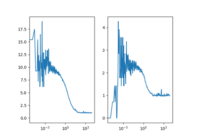
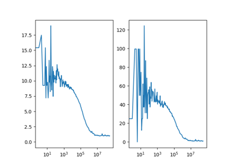
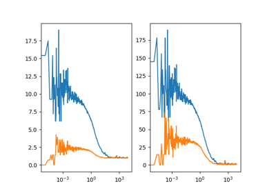
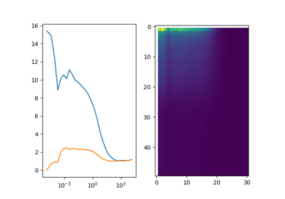
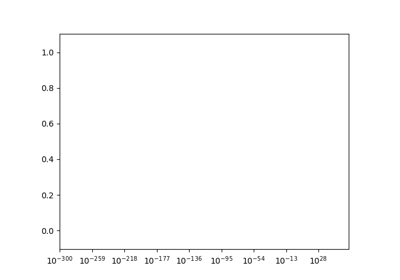
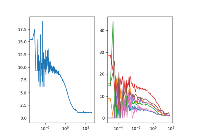
Image spectroscopy¶
Time resolved imaging, e.g., Fluorescence lifetime imaging.
Examples¶

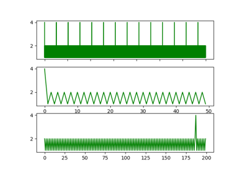
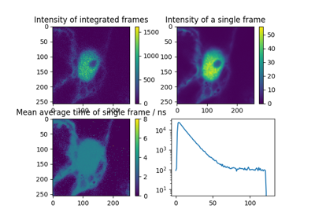
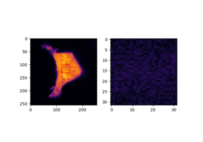
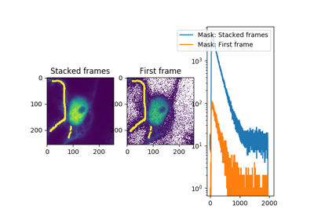
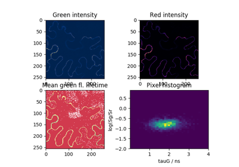
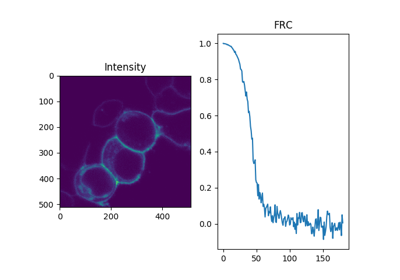
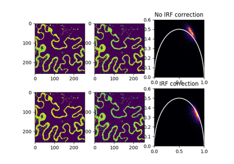
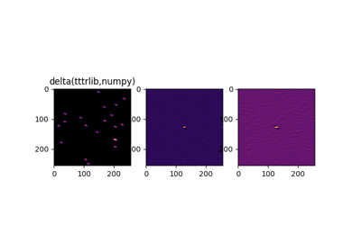
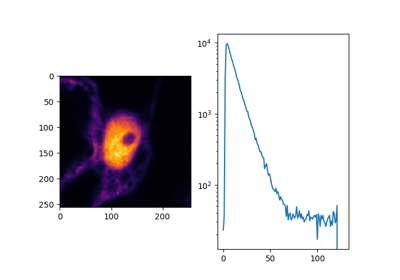
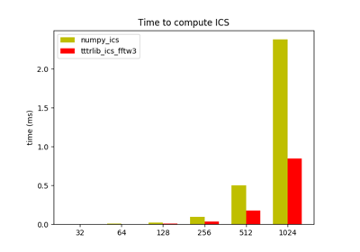
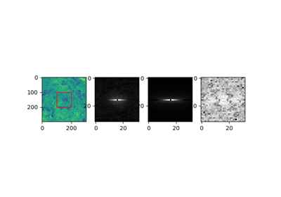
Miscellaneous¶
Application of miscellaneous function part of tttrlib.
Working with TTTR objects¶
Examples on working with tttrlib.TTTR objects.
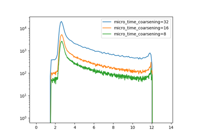
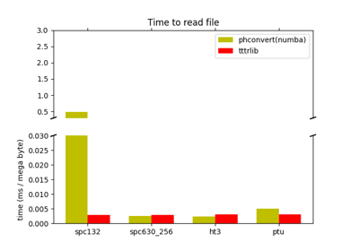